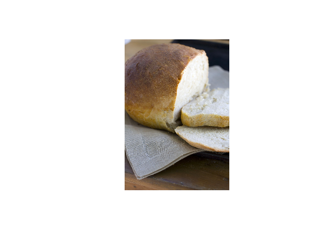
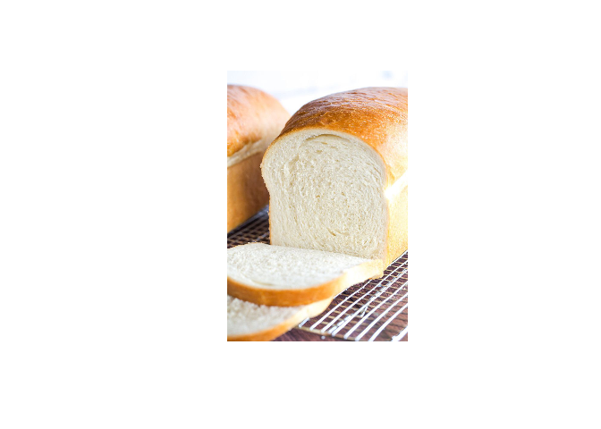
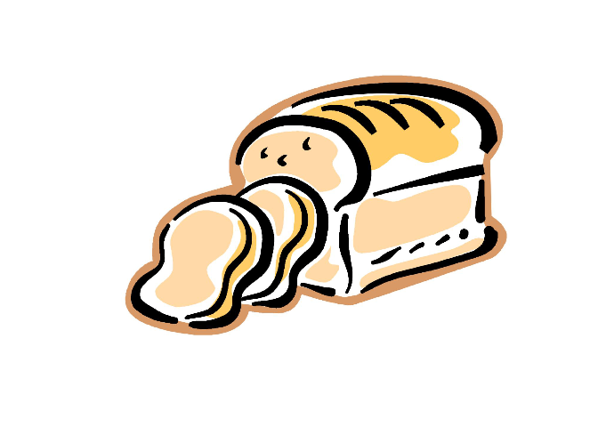

wrecipe is a package that provides tools for storing recipe elements into a consistent format. This is primarily used for my personal website after web-scraping the recipies from the internet.
Installation
This package has not been submitted to CRAN, but may in the future. You can install the development version of wrecipe from GitHub with:
# install.packages('pak')
pak::pak('cb12991/wrecipes')Example
We will showcase a simple recipe for bread. You can pass all the elements of the recipe to the initialization call if desired, but we will add each element sequentially for illustrative purposes.
The only thing a Recipe object requires at initialization is a name.
library(wrecipe)
(example <- Recipe$new(name = 'Bread'))
#> <Recipe>
#>
#> Bread
#>
#> NA
#>
#> Image Count: 0
#> Ingredient Count: 0
#> Equipment Count: 0
#> Instruction Count: 0Next, we can add some summary detail for the recipe.
example$summary <- 'This is a simple recipe for white bread.'
example
#> <Recipe>
#>
#> Bread
#>
#> This is a simple recipe for white bread.
#>
#> Image Count: 0
#> Ingredient Count: 0
#> Equipment Count: 0
#> Instruction Count: 0The next four elements are additional R6 objects that share the same purpose of storing data in a consistent format.
For recipe images, metadata can be stored as an <Image> object. Each <Image> object corresponds to a single image, but you can provide a list of <Image> objects to the <Recipe>.
imgs <- lapply(
X = c(
'https://media.spokesman.com/photos/2011/10/12/Food_Crusty_Bread_12.jpg',
'https://i.pinimg.com/originals/63/ed/0a/63ed0ab91c97ca072a161019797eb002.jpg',
'http://www.clipartbest.com/cliparts/dir/6aG/dir6aGr4T.jpg'
),
FUN = function(.url) {Image$new(url = .url)}
)You can either pass in a file or a URL that points to the image (I did a simple Google search for bread for the images used above). Once initialized, you can preview the images using its plot() method.
# Plotting images from URLs requires them to first be downloaded. If you do not
# specify where you would like the image file to be downloaded using `file`,
# they will be saved in the current working directory. We'll use a temp location
# for this example.
withr::with_dir(tempdir(), {
for (i in imgs) { i$plot() }
})
Add the list of images to the recipe.
example$images <- imgs
example
#> <Recipe>
#>
#> Bread
#>
#> This is a simple recipe for white bread.
#>
#> Image Count: 3
#> Ingredient Count: 0
#> Equipment Count: 0
#> Instruction Count: 0Examples for the remaining recipe elements will be added at a later time.